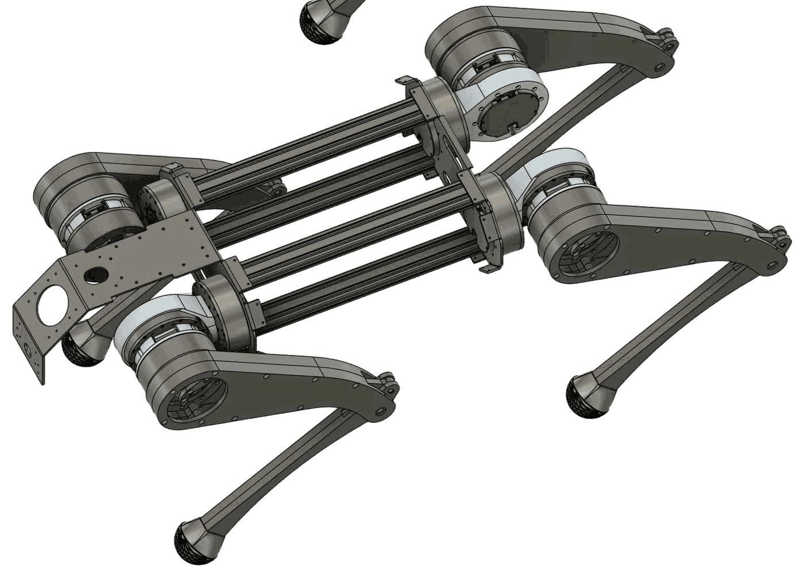
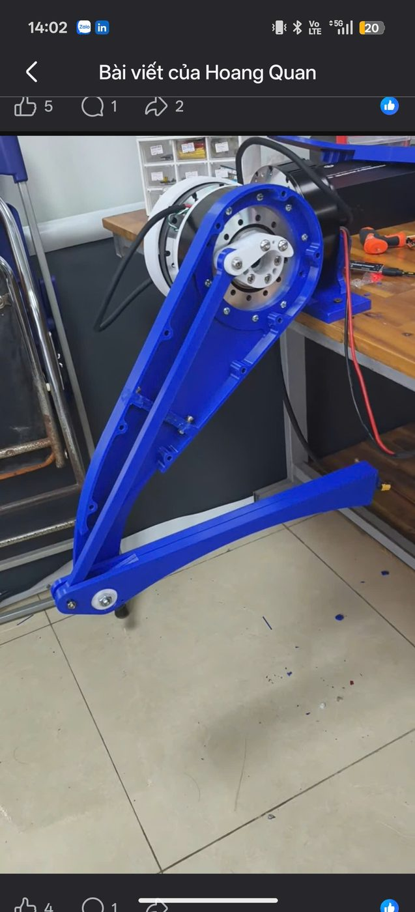
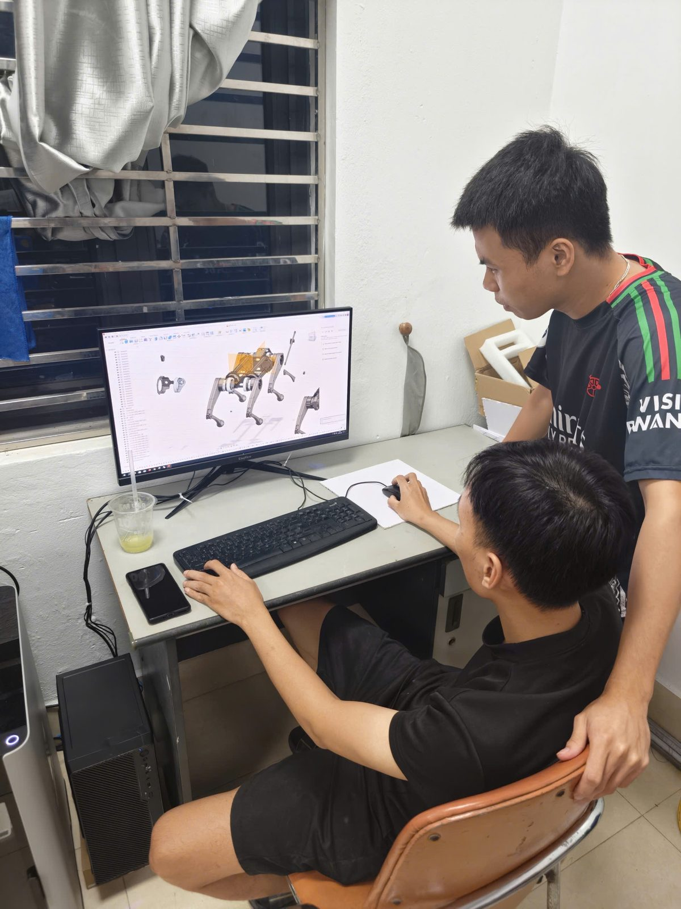
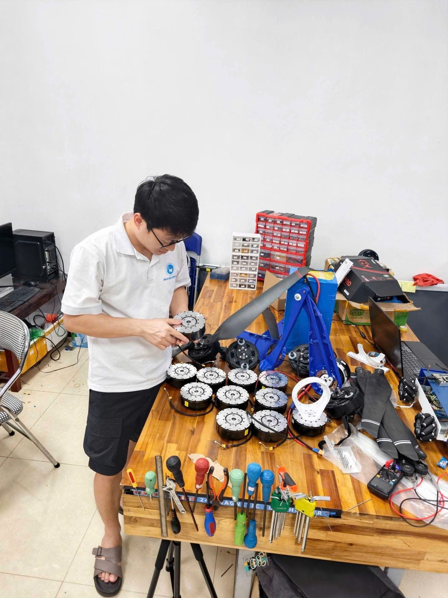

Designed for movement.
An articulated quadruped architecture with aluminum components and a defined kinematic model, connecting physical design to control.
Intelligent movement starts with thoughtful engineering. We’re building a quadruped platform that connects mechanical design with learned control.
Meet the platform
A research platform for exploring how robots move, balance, and interact with the physical world. Developed from the joint up.
Development specifications from the V1 robot model. Hardware performance is still being validated.
Hardware and software evolve together. Our development workflow brings design, simulation, and control into the same loop.
An articulated quadruped architecture with aluminum components and a defined kinematic model, connecting physical design to control.
Reinforcement learning workflows explore locomotion policies in simulation before progressing toward hardware validation.
Robot descriptions and simulation environments let us examine joint behavior, improve control, and iterate on the platform.
We believe legged robots can extend what machines can do beyond structured environments.
Chinbi Robotics is at the beginning of that journey. Our focus today is the foundation: a capable mechanical platform, reliable control, and a disciplined path from simulation to the physical world.
Follow the engineering journeyWe’re developing the platform step by step. Two milestones are already behind us — here’s what’s done, what’s in progress, and what’s next.
All 12 RS04 actuators wired on a CAN bus, with stable low-level control confirmed on the physical robot.
A flat-ground walking policy trained in Isaac Lab — PPO, ~3,000 iterations, ~43 minutes on a single RTX 3060 — reaching a 99.2% survival rate.
Deploying the trained policy onto the physical robot for its first real-world steps, with stair-climbing training running in parallel.
Once the robot can walk reliably outside simulation, it can be rented out — the target is a first paying customer within roughly 6 months.


In-house design across mechanics, control, and locomotion — with a clear roadmap to localize the one component we still source externally.
| Component | Status | Note |
|---|---|---|
| Mechanical design (frame, joints, legs) | In-house | Design, simulation, and in-house machining / 3D printing |
| Real-time control & firmware | In-house | STM32H7, CAN bus scheduling, custom-written drivers |
| Locomotion algorithms (RL) | In-house | Isaac Lab, custom reward design & training curriculum |
| Systems & sensor integration | In-house | Hardware architecture, power system, sensor suite |
| QDD actuators & power electronics | Phase 1: sourced | Phase 2: in-house motor & driver development |
Phase 1: source actuators externally. Phase 2, once resourced: develop motors and drive electronics in-house — targeting ≥80% localization.
Electronics and machining partners near Thái Nguyên form a fairly complete local ecosystem, shortening the design-to-prototype loop.
PCT patent WO/2026/109238 (embedded vapour-chamber cooling); a Chinbi trademark application is filed with Vietnam’s IP Office.
Legged robots are becoming real operating tools. Vietnam imports nearly 100% of them today.
Resolution 57-NQ/TW makes science, technology, and digital transformation a national priority, with strong incentives for deep-tech startups; a “state–university–enterprise” mechanism is designed to push research to market.
Most domestic “robotics companies” import and distribute robots from China. Very few own the full stack — mechanical, electronics, control, AI — and manufacture locally.
We start with what’s sellable the moment the demo is ready, then layer on higher-value lines as field reliability is proven.
The earliest cash flow, with a low barrier to entry — live as soon as the demo is ready.
Robotics education, “Robocon-as-a-service,” and research platforms sold to labs.
Expanding into enterprise accounts once field reliability is proven.
Once the platform is mature and the corporate structure is fully in place.
We win on local price, on-the-ground support, and owning the technology — not on raw spec sheets.
| Criteria | Chinbi | Unitree A2 | Boston Dynamics Spot |
|---|---|---|---|
| Price (comparable class) | ~300M VND (~US$12K) | ~1.3B VND (~US$52K) | ~1.7B VND (~US$68K) |
| Event rental service | ~15–25M VND/event, with technician | No such service | No such service |
| Local support & customization | Direct, full-stack | Through a distributor | Very limited |
| Firmware / control ownership | Yes — custom-written | No (closed) | No (closed) |
| Localization / dual-use potential | Roadmap to ≥80% localization | None | None (export-restricted) |
Rental rate ~15–25M VND per event (single day); multi-day packages ~12–18M VND/day — one robot pays back its cost in roughly 15–20 rentals.
3-year base-case projection, in billions of VND (1B VND ≈ US$40,000).
| Metric | Year 1 | Year 2 | Year 3 |
|---|---|---|---|
| Revenue (billion VND) | 1.2 | 4.5 | 12.0 |
| Gross margin | ~35% | ~45% | ~50% |
| EBITDA (billion VND) | −0.6 | ~0 | +2.5 |
| Events + training contracts | ~45 | ~110 | ~200 |
| Headcount | 5 | 9 | 16 |
Average rental ~18M VND/event · 2–4 B2B training contracts/year · robot retail price ~300M VND · excludes industrial inspection revenue (Phase 2).
A talented, experienced founder
University classmates now pursuing PhDs at Harvard and ETH Zürich; research friends across AI PhD programs in the UK, US, France, and Switzerland — a channel to international talent, technology, and partners.
Technical standards, documentation, and product positioning are export-oriented from the start, built on the founder’s personal network in these markets.
The team around the founder

Young mechanical, electronics, and controls engineers — continuously supplemented from the Smart Mechatronics research group at ICTU.
First-time CEO — but with a track record managing technical delivery in international industrial R&D.
Access to international AI/robotics expertise through the founder’s network (Harvard, ETH Zürich, UK, US, Switzerland).
A faculty position brings free lab space & power, direct connections into the education ecosystem, and shared lab infrastructure.
Angel / seed round
Post-money valuation ~13.3 billion VND (~US$532K) · disbursed in two tranches
| Item | Purpose | Amount |
|---|---|---|
| Tranche 1 — on signing | 1B VND (~US$40K) | |
| Company & brand registration | Legal entity + Chinbi trademark filing | 50M VND |
| Hardware completion & R&D | Remaining actuators / sensors, RL training workstation | 500M VND |
| BD & operations hires | 6–9 months salary for BD + field technician | 450M VND |
| Tranche 2 — on first customer / LOI | 1B VND (~US$40K) | |
| Small-batch pilot production | Moving from demo to pre-production | 1B VND |
Working demo → rentable → first paying customer and a field-validated MVP.
Common equity (fixed). Tranche 2 releases on milestone, at the same agreed percentage.
~10% of equity reserved for the team (pre-investment pool), before calculating the investor’s share.
This is an early-stage introduction. When there’s a fit, Chinbi will work with investors on a live demo, a detailed financial model, and the legal documentation for due diligence.
Technology and demo are near-complete on founder capital — direct equity sale, no SAFE.